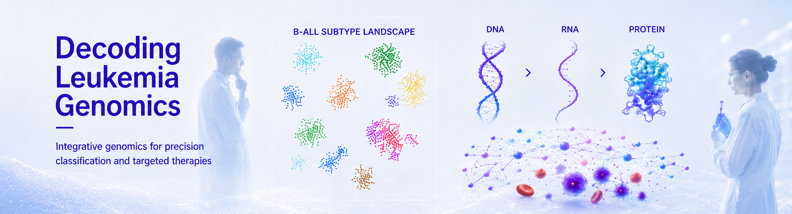
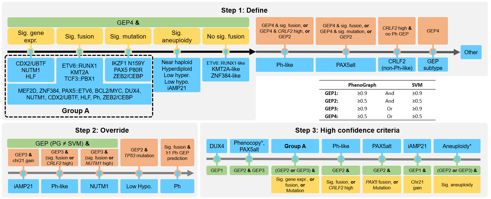
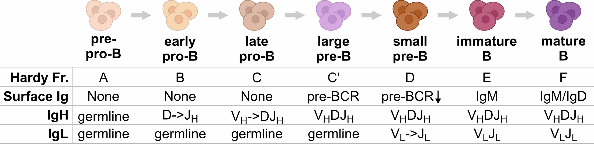
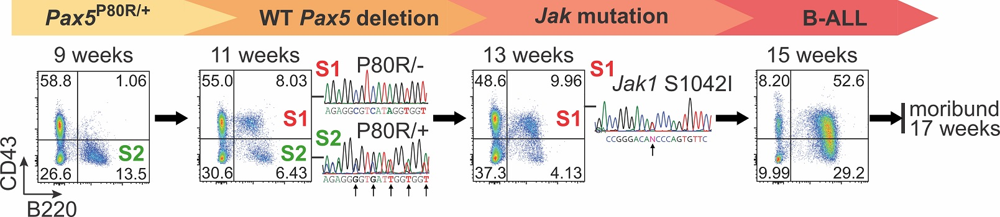
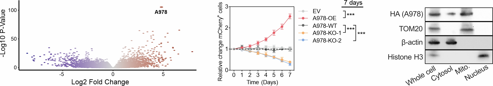
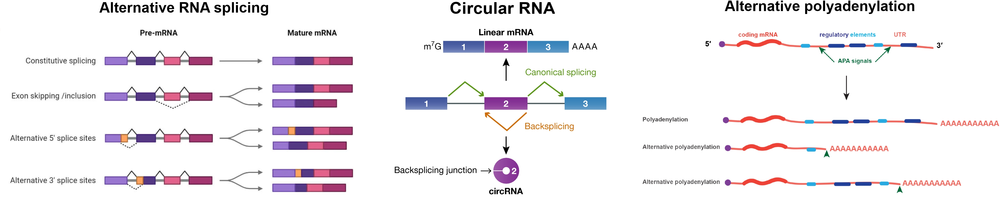

Overarching Goal
We aim to advance the understanding of the genetic and epigenetic alterations that drive the pathogenesis of different leukemias, and develop faithful experimental models and novel diagnostic and therapeutic approaches.
Research Background
Our research focuses on acute lymphoblastic leukemia (ALL), the most common pediatric cancer. ALL comprises dozens of distinct subtypes, each characterized by unique genetic alterations and gene expression profiles. Precise classification of these subtypes is critical for accurate prognosis and effective treatment strategy.
In our recent work, we conducted an integrative genomic analysis of over 3,000 RNA-seq samples of B-cell ALL (B-ALL) and developed a molecular classification system based solely on bulk RNA-seq (Hu et al., 2024). This system enables automated classification of all known B-ALL subtypes and has been widely adopted in both basic research and clinical practice.
Beyond B-ALL classification, our lab has extensive expertise in genomics and bioinformatics. We develop computational tools powered by machine learning models to identify novel molecular markers of each B-ALL subtype, which further advances our understanding of leukemia genomics. Some of these tools are specifically designed for B-ALL, reflecting our in-depth knowledge of this highly aggressive disease. On the experimental side, we employ both in vitro and in vivo models to study how these molecular markers contribute to leukemia initiation, progression, and drug response. By dissecting the underlying mechanisms, we aim to develop and test novel therapeutic strategies that could lead to more effective treatments for high-risk B-ALL subtypes.
By integrating advanced computational analysis with biological validation, we aim to unravel the molecular complexities of B-ALL and drive the development of more precise diagnostic tools and targeted therapies.
Research Support (Ongoing and completed)
| NIH/NCI, Research Project Grant (R01CA303874) | Gu (PI) | 09/01/2025 - 08/31/2030 |
| NIH/NCI, MERIT Award (R37CA300358) | Gu (PI) | 08/18/2025 - 07/31/2030 |
| Pediatric Cancer Research Foundation, Translational Research Grant | Gu (PI) | 01/01/2024 - 12/31/2025 |
| The V Foundation, V Scholar Award | Gu (PI) | 09/01/2023 - 08/31/2026 |
| Leukemia Research Foundation, New Investigator Grant | Gu (PI) | 07/01/2023 - 06/30/2025 |
| Andrew McDonough B+ Foundation, Childhood Cancer Research Grant | Gu (PI) | 01/01/2023 - 12/31/2024 |
| NIH/NCI, Pathway to Independence Award (K99/R00CA241297) | Gu (PI) | 07/01/2019 - 06/30/2023 |
| Leukemia & Lymphoma Society, Special Fellow Award | Gu (PI) | 07/01/2018 - 12/31/2021 |
| American Society of Hematology, Scholar Award | Gu (PI) | 07/01/2018 - 06/30/2019 |
Direction 1: MD-ALL Platform & Fusion/SV Callers

The recent advancements in transcriptome sequencing (RNA-seq) have facilitated the discovery of novel B-ALL subtypes, which largely improves B-ALL classification and risk stratification. However, implementing these advances in research clinical settings remains challenging.
This study introduces MD-ALL (Molecular Diagnosis of ALL), an integrative computational platform designed to provide accurate and comprehensive B-ALL classification. Using machine learning models, MD-ALL identifies key feature genes and classifies B-ALL subtypes based on gene expression and genetic alterations. A critical advantage of MD-ALL is its ability to integrate multiple aspects of RNA-seq data, including sequence mutations, copy number variations (CNVs), and gene rearrangements, to achieve definitive classification. The platform demonstrated superior performance in a validation cohort of 974 samples, outperforming existing B-ALL classification tools.
Since fusions and structural variations (SV) are the most common drivers in B-ALL, we are also developing highly sensitive and accurate fusion/SV callers based on RNA-seq data that are customized for B-ALL analysis.
Direction 2: B-Cell Differentiation and BCR Development

B-ALL is caused by a blockage of B-cell differentiation. B cells originate from hematopoietic stem cells and progress through several stages to become mature B cells with a functional B cell receptor (BCR), which is composed of immunoglobulin heavy and light chains. Our study shows that different B-ALL subtypes correlate with different stages of B-cell differentiation and BCR development. This provides an opportunity to study the regulation of 3D structure of the IgH/IgL gene organization and the roles of key factors such as PAX5, WAPL, cohesin, CTCF, RAG1, RAG2, etc.
Direction 3: PAX5alt and PAX5 P80R B-ALL Subtypes

PAX5 mutations define two distinct B-ALL subtypes with markedly different clinical outcomes. However, the underlying mechanisms driving these differences remain largely unknown. To study the role of PAX5 mutations in B-ALL initiation and progression, we developed multiple genetically engineered knock-in mouse models. Using single-cell multi-omics analysis (scRNA-seq, scBCR-seq, and single-cell mutational profiling), we identified the stepwise mutagenesis and leukemogenesis process, from WT Pax5 allele deletion to the acquisition of secondary mutations (e.g., Jak mutations) leading to overt leukemia.
Furthermore, by leveraging our mouse models and patient-derived xenograft (PDX) samples, we uncovered the molecular mechanisms underlying the distinct clinical outcomes of B-ALL patients driven by different PAX5 mutations. These findings are expected to inform future precision medicine strategies for B-ALL patients with different PAX5 alterations, leading to more tailored and effective therapies.
Direction 4: Driver Molecular Markers in High-Risk B-ALL

Philadelphia chromosome-positive (Ph) and Ph-like B-cell acute lymphoblastic leukemia (B-ALL) are high-risk subtypes with very poor clinical outcomes. Through large-scale transcriptomic analysis, we identified A978 as the most significant RNA marker of Ph/Ph-like B-ALL. To investigate its role in leukemia initiation and progression, we employed multiple experimental approaches, including cell growth competition assay, scRNA-seq, Bio-ID (proximity labeling with mass spectrometry), dTAG fast degradation assay (to identify direct targets), CUT&RUN/CUT&Tag and 4C assays (to study A978 activation), transmission electron microscopy (TEM) and immuno-TEM to determine A978’s localization within cellular compartments (in mitochondria).
For translational applications, we designed a CpG-conjugated small interfering RNA (CpG-siRNA) to specifically target A978 in Ph B-ALL. This strategy has been tested using both in vitro leukemia models and in vivo patient-derived xenograft (PDX) models, demonstrating significant therapeutic potential.
Direction 5: Novel Molecular Markers in B-ALL Subtypes

B-ALL is a complex disease with multiple subtypes, each driven by different genetic and molecular changes. Studying RNA-based molecular markers helps not only in classifying these subtypes but also in understanding how they contribute to disease development, progression, drug response, and their potential as therapeutic targets.
- Long Noncoding RNA (lncRNA): lncRNAs are long RNA molecules that do not code for proteins but regulate gene expression. Some lncRNAs promote leukemia by altering cell signaling or blocking normal B-cell development.
- Circular RNA (circRNA): circRNAs are stable, circular-shaped RNAs formed when an exon loops back on itself. They act as molecular sponges, trapping other RNAs or proteins to regulate gene activity.
- Alternative Splicing: Alternative splicing allows a single gene to produce different protein versions by including or skipping certain RNA segments.
- Alternative Polyadenylation (APA): APA controls how long the end of an mRNA molecule is, affecting how much protein gets made and how stable the RNA is. Changes in APA can alter gene expression, making leukemia cells more aggressive or resistant to drugs.